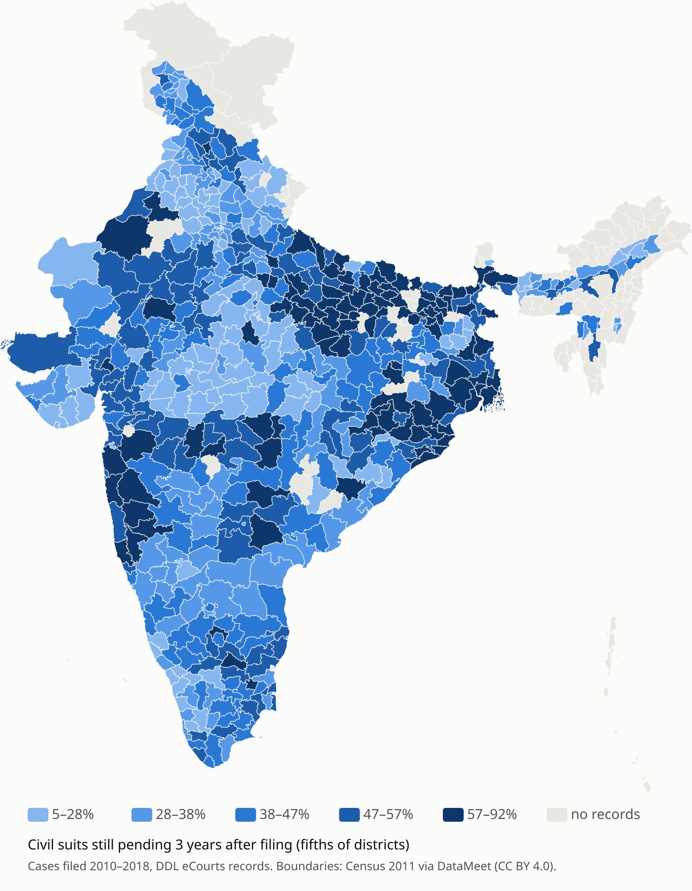

How long do India's district courts take? Measuring, explaining and forecasting the backlog
Download PDFAbstract. India's district and subordinate courts held 4.77 crore pending cases at the end of 2025, up from 2.65 crore in 2014. We combine the government's state-wise pending and disposal counts (2014–2025) with 80.8 million case records from 599 districts (filed 2010–2018). Five results follow. (i) Kaplan–Meier estimates that account for still-pending cases put the median time to a decision at 29 months for an ordinary civil suit, with 26% still undecided after five years; these estimates correct for the uneven digitisation of early records, which otherwise overstates delay. (ii) The cases filed in 2010–2018 spent 12.7 crore case-years waiting; the 2.3 crore still undecided at collection had a median age of 2.0 years. (iii) COVID added an estimated 48 lakh cases (32–70 lakh) to the backlog by the end of 2021, calibrated against the projection method's own pre-COVID errors. (iv) Across districts, caseload per courtroom does not explain slowness, and structural features explain only 10% of the variation; districts that schedule hearings further apart are markedly slower, especially for criminal cases. (v) Averages over decided cases, the usual statistic, understate delay: 13 months for civil suits against 29. An audit against the official figures finds that the case records hold about 61% of officially implied filings in 2015–2018, with large differences between states; reweighting to official filings moves the headline civil-suit median by about a month. Two negative results are reported in full: a judge-handover design fails its placebo test, and a district-level forecasting model ties, rather than beats, simple official-series forecasts for 2019. A forecast of every state's pending count on 31 December 2026 was locked by hash before the outcome exists.
1. Introduction
Delay is the most visible failure of Indian courts, and the least well measured. Official dashboards report how many cases are pending, but not how long a case takes: a pending count mixes old and new cases, and averages over decided cases alone leave out exactly the slow ones that are still waiting. This paper measures delay with methods that handle unfinished cases, puts a number on the total time spent waiting, separates the COVID shock from the trend that was already under way, and asks what slow districts have in common. It also commits to a forecast that can be checked.
The emphasis throughout is on claims that can be falsified. Each estimate is paired with a benchmark or a placebo test, the results that failed are reported alongside those that held, and every figure is rebuilt from the public repository by continuous integration.
2. Data
Official series. State-wise pending cases at 31 December for 2014–2025 and disposals for 2014–2021, transcribed from the Ministry of Law and Justice's answers to Lok Sabha questions (USQ 1838, 16 December 2022; USQ 2362, 13 February 2026), which in turn draw on the National Judicial Data Grid. The state figures are tested against the printed national totals; Kerala's 2016 disposal figure, roughly ten times its neighbouring years, fails and is excluded. Filings are never published for all years, so they are recovered from the stock–flow identity filedt = Pt − Pt−1 + Dt.
Case records. The Development Data Lab's eCourts extract (CC BY-NC-SA 4.0): 80.8 million cases filed between January 2010 and December 2018, with filing date, decision date (if any), case type, court and district. The records were collected district by district, at different times between September 2018 and February 2020. A district's records are taken to end at the last month in which its recorded decisions reach half its average 2018 month (and no later than the last month in which its state's decisions reach a fifth of the state's 2018 average); later decision dates, including impossible ones such as the year 5000, are treated as undecided. Case types are grouped into ten categories from the free-text names each court uses. The judge table gives each judge's courtroom and start and end dates.
Maps. District results are drawn on the 641 Census 2011 district boundaries (DataMeet, CC BY 4.0). DDL links 534 of its 630 court units to a 2011 district; the rest are matched by hand (renamed districts, districts carved out after 2011 shown inside their parent, and cities split into several court units), and the crosswalk is published.
What is published. Only aggregates: counts by district, filing month and decision month. No case-level rows and no names of people leave the analysis.
3. How long does a case take?
For each district and case type, the time from filing to any final disposal is estimated with the Kaplan–Meier product-limit estimator, Ŝ(t) = ∏tᵢ ≤ t(1 − dᵢ/nᵢ), at monthly resolution. Cases still undecided at the collection month are right-censored there, so slow cases contribute the time they are known to have waited instead of being dropped. Intervals use Greenwood's variance. "Decided" means any disposal, including dismissal, withdrawal, settlement and transfer.
Left truncation. eCourts reached districts at different times, and cases a district had already decided when it went online were mostly never entered. Recorded filings rise from 4.3 million (2010) to 13.7 million (2018), far faster than real filings, and among cases filed in 2010 only 16% of those filed before their district's records become complete were decided within a year, against 42% of those filed after. Pooling these survivors with complete records would overstate delay. We estimate, for each district, the month from which its records are complete (the first month after which every six-month window holds at least half its 2016–17 filing rate, and records decisions of at least a fifth of that window's filings) and let earlier cases enter the risk set only at that month (delayed-entry Kaplan–Meier), dropping those decided before it. 15% of all records are affected. 14 units whose records never meet this rule are withheld. All estimates in this paper are corrected; Section 10 reports how much this changes.
National figures. National estimates pool every district into one curve, each case censored when its own district's records end. Pooling lets the states followed longest weigh more at long durations, so as a check each state's curve is also estimated on its own and the curves are averaged with case-count weights: 44% of civil suits still pending at three years and 27% at five, against 43% and 26% pooled.
The ordering is stable and large. Bail applications are decided within weeks. Family cases take a median of 12 months. Civil suits are the slowest major category: median 29 months, and 26% are still pending five years after filing. Across all civil cases the median is 18 months, against 7 for criminal cases, but the criminal tail is as long: 15% of criminal cases are still pending after five years. District-level curves for 599 districts and 8 special courts are published in the interactive calculator, in English and Hindi, and on a page for each district.
Why averages over decided cases mislead. Delay is often reported as the time decided cases took. That statistic leaves out every case still waiting, and those are the slowest. On the same complete records (cases filed once their district's records are complete), decided civil suits took a median of 13 months; Kaplan–Meier on exactly the same cases, counting those still waiting, gives 28 (the headline 29 also counts cases filed before their district's records were complete, followed from the month they became complete). For criminal cases before a magistrate the figures are 2 and 7 months. A litigant's question is closer to the second number.
4. Years of waiting
A pending count treats a case filed last month and a case filed eight years ago alike. Summing the age of each pending case at collection gives a measure of accumulated delay. Of the 80.8 million cases filed in 2010–2018, 2.3 crore were still undecided when their district's records end. Together they had waited 6.0 crore case-years; adding the time spent by the cases decided before collection gives 12.7 crore case-years. The median pending case had waited 2.0 years (mean 2.6); 35% had waited more than three years and 16% more than five. These are lower bounds: cases filed before 2010 are not in the data, and most cases involve two or more people.
5. The COVID shock
The counterfactual for each state projects its mean log growth over 2015–2019 forward from 2019, a rule fixed before post-2019 data was examined. In backtests from 2016–2018 origins, this projection under-predicted a backlog that was already accelerating (national error between about −3% and +2% per year of horizon). The headline counterfactual is corrected by the median backtest error, and its range spans the backtest errors, so the stated uncertainty is the method's own observed error rather than a model of it. By the end of 2021 the backlog stood 48 lakh above the counterfactual (range 32–70 lakh), 12% of the stock. The gap narrows after 2022, and by 2025 the range includes zero.
At the 2023–2025 pace, the national backlog grows by about 13 lakh cases a year and does not clear; clearing it within ten years would take about 61 lakh extra decisions every year, 36% more than courts decided in 2021.
6. What do slow districts have in common?
For 570 districts with at least 2,000 cases, the outcome is the share of civil cases still pending three years after filing (Kaplan–Meier). It ranges from 16% in the fastest tenth of districts to 47% in the slowest. We regress it on standardised district features computed from the case and judge records for 2014–2017: caseload per active courtroom (log), district size (log annual filings), the criminal share of filings, the median months a judge stays in one courtroom, and, as a control for data coverage, the year the district's records become complete. The 95% intervals come from 2,000 bootstrap resamples of districts.

Caseload per courtroom, the usual explanation, barely predicts slowness (−1.3 percentage points per standard deviation, interval −2.8 to +0.2). Longer judge tenure goes with faster courts (−1.8 points per SD of about 7 months), and a heavier criminal docket with slower civil cases (+2.0 points). Together these features explain only 10% of the variance between districts. A throughput variable (decisions ÷ filings) raises this to 44%, but it is close to a restatement of the outcome and is not interpreted. These are cross-sectional correlations: districts with longer-serving judges may differ in many other ways, and most of what makes a district slow (local practice, adjournments, vacancies, the bar) is not recorded in this data.
7. Where cases get stuck, and how far apart hearings are
For each case pending at collection, the records give the purpose of its next listing (free text typed by court staff) and the dates of its last and next listings. Of the 2.13 crore such cases, 37% were next listed for summons, notices, warrants or appearance: 18% for summons, notices, warrants or process, where the court was still trying to get a party there, and 19% for "appearance", which can also be a routine date. 22% were listed for evidence; 7% for framing charges or issues; 16% for applications and general hearings; and 10% for arguments, orders or judgment. The next hearing was set a typical (geometric mean) 60 days after the last: 69 days at the summons stage, 49 at evidence (gaps leave out the states whose hearing records look stale). Across districts, leaving out Mizoram, whose hearing records look stale, the typical gap runs from 34 days in the tenth of districts with the shortest gaps to 84 in the tenth with the longest.
Longer gaps go with slower courts (Figure 6). In the fifth of districts with the shortest gaps, 14% of criminal cases were still pending three years after filing; in the fifth with the longest, 36% (civil: 27% and 37%). Unlike caseload per courtroom, the gap keeps its association when caseload, district size, case mix, judge tenure and record completeness are held fixed: gaps one standard deviation longer go with 8.9 percentage points more criminal cases pending at three years (interval 7.7 to 10.2) and 4.7 points more civil cases, and with the gap included the model accounts for 39% of the variation between districts in criminal delay (22% civil). It also survives giving every district the national stage mix, and comparing districts only within their own state (Spearman ρ = 0.42 criminal, 0.33 civil). A stricter model holds fixed the mean age of each district's pending cases, since slow districts hold older cases and old cases may be listed less often (this partly controls for the outcome itself). The criminal association survives (5.2 points per standard deviation); the civil one mostly does not (1.0, interval 0.1 to 1.9), so for civil cases the link may largely reflect old cases waiting longer between dates. These are associations between districts, not measurements of individual cases, and the direction of cause is open: congested courts may space hearings out because they are congested. For criminal cases, the result points to the scheduling of hearings, rather than the number of cases per courtroom, as a place where slow and fast districts differ.
The labels limit what can be said. Police "final form" and charge-sheet labels, which come before a trial, make up 1.7% of pending cases and fall in "arguments, orders or judgment"; 1.4% have no label; and "appearance" can be a routine date on which nothing else happens. The gaps are the ones scheduled, not the time a case actually waited, and they describe only cases still pending at collection.
8. Does a change of judge slow a courtroom? A failed design
Judges in India are transferred often, and a new judge must learn a docket. We built a stacked difference-in-differences event study around 11,142 judge handovers in 447 districts: each courtroom's monthly disposals relative to its own previous twelve months, minus the same for same-district courtrooms without a change, with a district block bootstrap. A planted synthetic −30% effect is recovered. On real data, disposals are about 10% lower in the year after a handover.
The design does not pass a placebo test. Moving every handover 18 or 30 months earlier, to dates when no judge changed, still yields drops of 8% and 7%. The decline is under way before the new judge arrives; the comparison picks up courtrooms that were already slowing. We therefore report no estimate. A further limitation: courtroom numbers in the judge and case tables agree in only 42% of judge-months.
9. Forecasting, and grading forecasts honestly
2019, graded. A district-level LightGBM quantile model trained on the case records beats the best simple forecast by 12–25% (pinball loss) on held-out 2016 and 2017 origins. Its 2019 state forecasts were committed before any 2019 outcome was examined and then scored against the official figures for 27 states. At state level it matches simple forecasts built from the official series (mean absolute error of backlog growth 0.077, against 0.075 for a common rate and 0.076 for repeating 2018) but does not beat them. We report this as a tie.
2026, locked. Pending cases on 31 December 2026, for every state, were forecast from data through 2025 with a method chosen by a rule fixed before any backtest (lowest case-weighted error of one-year state log growth across six target years). The national median forecast is 4.93 crore (10–90%: 4.78–5.07 crore). The forecast files were committed on 8 October 2026 (commit 84732fc) and are guarded by a test that fails if they change. SHA-256 of the state forecast file:
adf62cd20085e545730b10e62a7ffa66dae5e3f90207d197c5207f2aa5c96d2d
The forecast will be graded once the government publishes the 2026 figure.
10. Auditing our own results
We looked for ways the data could mislead and report each check, including the ones that changed our numbers.
- Digitisation (left truncation). Described in Section 3. Before the correction, ordinary civil suits had a median of 32 months; after it, 29. Nationally the change is modest, but 1,069 of 4,293 district × case-type results moved by more than 5 percentage points, and the civil-suit ranking of districts shifted by a median of 24 places (up to 276). Varying the completeness threshold from 30% to 70% puts the civil-suit median at 28–30 months.
- Collection date. Moving the rule that ends each district's records from half its normal monthly decisions to 35%, 65% or 80% puts the civil-suit median at 29–29 months.
- Precision of rankings. Simulating each district's 3-year figure from its sampling interval gives a 90% range for its rank. For civil suits the median range spans 19 places, and 15% of districts have ranges wider than 50 places; the published rankings show these ranges.
- Units that are not districts. 8 units in the source data are special courts or court complexes (for example Mumbai City Civil Court); they are labelled as such.
- Districts that never recorded decisions. Filings alone can look complete while decisions are missing. In 14 court units, including Gaya, Muzaffarpur, Bhojpur and Vaishali in Bihar and Chandauli in Uttar Pradesh, the records hold almost no decisions before 2018 (Gaya: 33 decisions in 2010–2017 against 7,969 in 2018), so every case looks stuck. An earlier version of this analysis ranked these units the slowest in India. The completeness rule now also requires recorded decisions of at least 20% of filings in every six-month window. Units that never pass are withheld, and 10% or 35% thresholds give a civil-suit median of 28–29 months.
- Where each district's records end (corrected twice). The national tables first merged every state's collection date into one, February 2019, which cut off states collected later and followed seven states a month or two past their end. The next version gave each state its own date. But districts within a state were collected months apart: in 158 districts (26% of cases) the records end three months or more before their state's date. Following a district past its end counts months in which no decision could be recorded, so its cases look slower. A check makes this visible: in the last month before the end, recorded decisions were 26% of the same month a year earlier with state dates, and 85% with district dates. Every district now has its own date. The civil-suit median moves from 30 months (state dates) to 29 (44% → 43% still pending after three years), and 139 of 4,293 district three-year figures fall by more than five points.
- Estimates resting on a handful of cases. The far end of a survival curve can rest on a few cases still being followed. Every curve now stops once fewer than 20 cases are followed, which leaves 265 three-year and 565 five-year district figures blank rather than estimated. A slowest tenth beyond that point is reported as "longer than the data follows", not as a number of years the data never reaches.
- Decision dates after collection. 1.9% of cases carry a decision date after their district's records end, 91% of them within a year (collection tailing off), and 1,412 cases carry impossible dates from 2022 on, after everything had been collected (most are the year 5000, a likely placeholder; one is 9201). All are counted as undecided at collection, the conservative choice. No decision precedes its filing date.
- The age of the pending stock against NJDG. The National Judicial Data Grid's age bands for pending district-court cases on 24 May 2020 (as reported in the press) can be compared with these records for the ages they fully cover. Among cases aged 1–10 years in the 30 states collected by December 2019, the records give 52%, 26% and 22% aged 1–3, 3–5 and 5–10 years; NJDG gives 48%, 26% and 26%. The records start in 2010, so their oldest band runs slightly low.
- Coverage of the court system. The official figures imply each state's filings through the stock–flow identity (pending at year end minus pending a year earlier, plus disposals). Against them, the case records used here (Development Data Lab's eCourts extract) hold 61% of 2015–2018 filings, rising from 55% in 2015 to 67% in 2018. Coverage ranges from 8% in Tripura to roughly all cases in Bihar; in Jharkhand (122%) the records hold more cases than the official figures imply, which neither source should allow. 5 states and union territories have no records. The identity also counts transfers and restorations, so single state-years are only indicative. Whether the gap lies in eCourts itself or in what was collected from it cannot be told from these records, so the results describe the courts they cover. Two checks suggest the headline figures are not driven by the gaps: weighting each state by its official filings gives a civil-suit median of 30 months (published: 29), and counting every record only from January 2014 gives 29. Across 22 states, coverage and the civil-suit share pending at 3 years are only weakly related (Spearman ρ = −0.02). Whether the missing cases differ from the recorded ones cannot be checked with this data.
- Are pending records live? A decision that was never entered would leave a case looking pending and a court looking slow. Among cases pending when their district's records end, 0.9% had last been listed for a hearing more than 12 months before, and 0.3% more than 24 months. In Bihar, home of many of the slowest districts, the share is 1.2%. An earlier version, measuring against state dates, reported 53% in West Bengal and 29% in Odisha and called their delays possibly overstated; with each district's own date both are 5%, so that warning was itself an artefact and has been withdrawn.
- An apparent speed-up. Within complete records, the share of cases decided within a year rises from 42% for 2010 filings to 56% for 2017 filings. Holding the case-type mix fixed, it rises from 44% to 54%. Splitting states by whether their coverage was steady in 2015–2018, the steady states rose from 47% to 59%, and states whose records were still filling in rose from 53% to 56%. The rise is no larger where records were still filling in, so coverage does not explain it. About 4 points of it is case mix; the rest may be a real speed-up, which this data cannot confirm. Our pooled figures describe 2010–2018 filings, not courts today.
- Slow-district correlates. Districts whose records start late have shorter observed judge postings, which could have produced the tenure association artificially. With the corrected outcome and the records-complete year as a control, it holds.
11. Limitations
- No public case-level data exists after 2018. The official 2023–2025 series has no disposal figures, and some state series jump in single years (Tripura −75%, Uttarakhand −17%).
- "Decided" includes dismissals, withdrawals and transfers; a transfer can end one case record and open another.
- Case-type grouping relies on court-specific names; 9% of cases fall in "other".
- Nothing here identifies how many judges would be needed, or what would happen if a policy changed. The district analysis is descriptive, and the one causal design attempted failed.
- High Courts and the Supreme Court are not covered.
- Cases filed before 2010 are absent, so ages of pending cases and case-years of waiting are lower bounds; decided cases from before each district's records became complete are under-counted in the total case-years.
12. Conclusion
Measured properly, delay in India's district courts is longer than averages over decided cases suggest, and the backlog was growing before COVID and is still growing after it. The variation between districts is large and is mostly not explained by caseload per courtroom; for criminal cases it tracks how far apart hearings are scheduled much more closely. That argues for studying how courts work, not just how many there are. The methods, data aggregates, interactive tools and a forecast waiting to be graded are public, so each claim here can be checked and, if wrong, corrected.
References
- Ash, E., Asher, S., Bhowmick, A., Bhupatiraju, S., Chen, D., Devi, T., Goessmann, C., Novosad, P., Siddiqi, B. (2021). In-group bias in the Indian judiciary: Evidence from 5 million criminal cases. Development Data Lab.
- Development Data Lab. Judicial data: eCourts case records 2010–2018. CC BY-NC-SA 4.0.
- Government of India, Ministry of Law and Justice. Lok Sabha Unstarred Question 1838 (16 December 2022) and 2362 (13 February 2026).
- Greenwood, M. (1926). The natural duration of cancer. Reports on Public Health and Medical Subjects 33.
- Kaplan, E. L., Meier, P. (1958). Nonparametric estimation from incomplete observations. Journal of the American Statistical Association 53(282), 457–481.
- National Judicial Data Grid. https://njdg.ecourts.gov.in
- Cengiz, D., Dube, A., Lindner, A., Zipperer, B. (2019). The effect of minimum wages on low-wage jobs. Quarterly Journal of Economics 134(3), 1405–1454. (Stacked event-study design.)